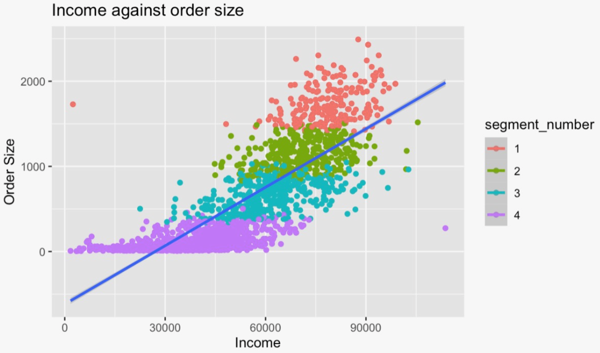

Comparing the order sizes of customers divided into four different
segments based on demographic data. The x-axis shows income in
Brazilian currency, and the y-axis represents the food order size by
using the cost of the order in Brazilian currency.

Marks
-
Points: the graph uses dots to represent the customers of the food
ordering app.
-
Lines: we used a line mark to show a line of best fit, to better
understand the trend of the data.
Channels
-
Position: the graph has an x-axis and a y-axis. The x-axis
represents the income in Brazilian currency, and the y-axis
represents the food order size, but we show this using the cost of
the order.
-
Attribute: the x-axis represents income in Brazilian currency,
which is a quantitative attribute. This is a good choice,
because as we go further to the right, the price increases. In
addition, combined with the color, we can easily see where each
new segment of people begins as the income increases to the
right.
-
Attribute: the y-axis represents food order size in terms of the
cost of the order, which is also a quantiative attribute. This
is a good choice because as we go furhter up the axis, the price
increases, which also aligns with common sense. We decided to
use price here to stay consistent with the x-axis unit. It's
also hard to quantify food order size, as someone could order 4
really small items while another person orders 1 large item. So,
this was a good way to make everything uniform.
-
Color: color is used here to show which of the four different
segments each person belongs to. The segments were chosen based on
income.
-
Attribute: color is used here to represent four different groups
of people, which is a categorical attribute. This is a good
choice because it's clear that each color represents something
different. The color of the line is also very different from the
four segments, which makes the graph more readable.
Colormap
-
Categorical colormap: there are four colors being used here, and
each one is very distinct. The colors are all around the same
saturation, so it's clear they all represent a different category.
-
Attribute: like the color channel, the colormap represents four
different groups of people based on income, a categorical
attribute. This is a good choice because it makes the different
groups very clear. We can easily discern people of different
segments and their spending habits by looking at order size.